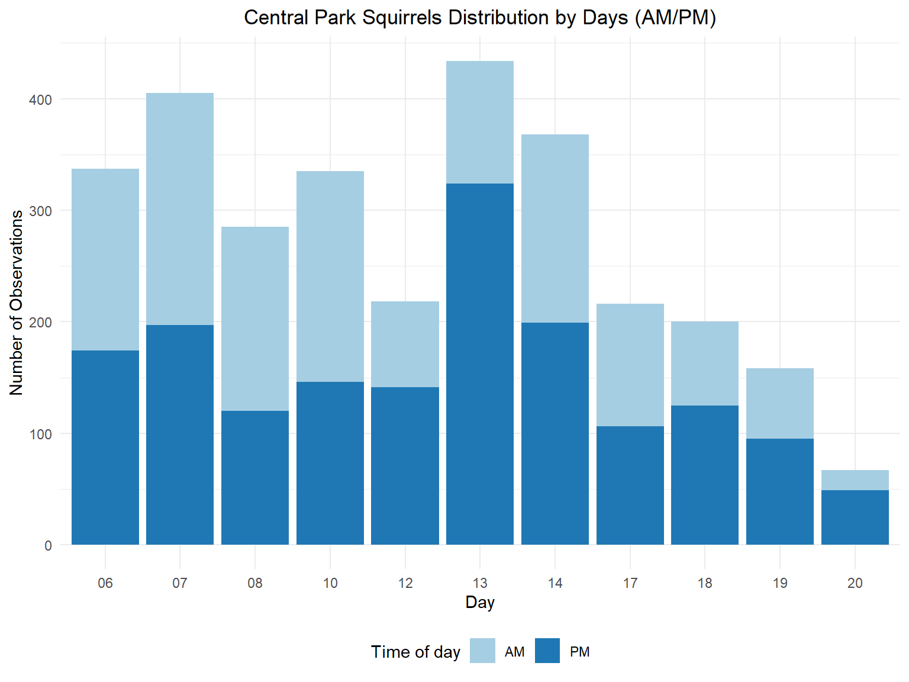

census =
read_csv("2018_Central_Park_Squirrel_Census_-_Squirrel_Data.csv")%>%
janitor::clean_names() %>%
#filter(!is.na(primary_fur_color))%>%
mutate(date=as.character(date),
long = as.numeric(x),
lat = as.numeric(y),
shift = as.character(shift),
activity = case_when( running == "TRUE" ~ "running",
chasing == "TRUE" ~ "chasing",
climbing == "TRUE" ~ "climbing",
eating == "TRUE" ~ "eating",
foraging == "TRUE" ~ "foraging"),
reaction = case_when( approaches == "TRUE" ~ "approaches",
indifferent == "TRUE" ~ "indifferent",
runs_from == "TRUE" ~ "runs_from"),
sounds = case_when( kuks == "TRUE" ~ "kuks",
quaas == "TRUE" ~ "quaas",
moans == "TRUE" ~ "moans"))%>%
select(-x,-y,-running,-chasing,-climbing,-eating,-foraging,-above_ground_sighter_measurement,-color_notes,-other_activities,-specific_location ,-tail_flags ,-tail_twitches,-other_interactions,-kuks,-quaas,-moans,-approaches,-indifferent,-runs_from)For our final project we were interested in looking at the NYC Squirrel Census collected by volunteers in October 2018. While the dataset is entitled “NYC Squirrel Census”, the data was geographically restricted to Central Park.
dates <-census %>%
mutate(Month= substr(date, 1,2), Day=substr(date, 3,4), Year=substr(date,5,9))
dates %>%
group_by(Day, shift) %>%
count() %>%
ggplot() +
geom_col(aes(x=Day, y=n, fill=shift)) +
scale_fill_brewer(palette = "Paired") +
labs(x = "Day", y ="Number of Observations", fill='Shift') +
ggtitle('Central Park Squirrel Data Collection Distribution (Oct. 2018)') +
theme(plot.title = element_text(hjust = 0.5)) 
skimr::skim(census)| Name | census |
| Number of rows | 3023 |
| Number of columns | 16 |
| _______________________ | |
| Column type frequency: | |
| character | 13 |
| numeric | 3 |
| ________________________ | |
| Group variables | None |
Variable type: character
| skim_variable | n_missing | complete_rate | min | max | empty | n_unique | whitespace |
|---|---|---|---|---|---|---|---|
| unique_squirrel_id | 0 | 1.00 | 13 | 14 | 0 | 3018 | 0 |
| hectare | 0 | 1.00 | 3 | 3 | 0 | 339 | 0 |
| shift | 0 | 1.00 | 2 | 2 | 0 | 2 | 0 |
| date | 0 | 1.00 | 8 | 8 | 0 | 11 | 0 |
| age | 121 | 0.96 | 1 | 8 | 0 | 3 | 0 |
| primary_fur_color | 55 | 0.98 | 4 | 8 | 0 | 3 | 0 |
| highlight_fur_color | 1086 | 0.64 | 4 | 22 | 0 | 10 | 0 |
| combination_of_primary_and_highlight_color | 0 | 1.00 | 1 | 27 | 0 | 22 | 0 |
| location | 64 | 0.98 | 12 | 12 | 0 | 2 | 0 |
| lat_long | 0 | 1.00 | 38 | 45 | 0 | 3023 | 0 |
| activity | 200 | 0.93 | 6 | 8 | 0 | 5 | 0 |
| reaction | 780 | 0.74 | 9 | 11 | 0 | 3 | 0 |
| sounds | 2884 | 0.05 | 4 | 5 | 0 | 3 | 0 |
Variable type: numeric
| skim_variable | n_missing | complete_rate | mean | sd | p0 | p25 | p50 | p75 | p100 | hist |
|---|---|---|---|---|---|---|---|---|---|---|
| hectare_squirrel_number | 0 | 1 | 4.12 | 3.10 | 1.00 | 2.00 | 3.00 | 6.00 | 23.00 | ▇▂▁▁▁ |
| long | 0 | 1 | -73.97 | 0.01 | -73.98 | -73.97 | -73.97 | -73.96 | -73.95 | ▅▇▅▆▂ |
| lat | 0 | 1 | 40.78 | 0.01 | 40.76 | 40.77 | 40.78 | 40.79 | 40.80 | ▇▇▃▅▆ |